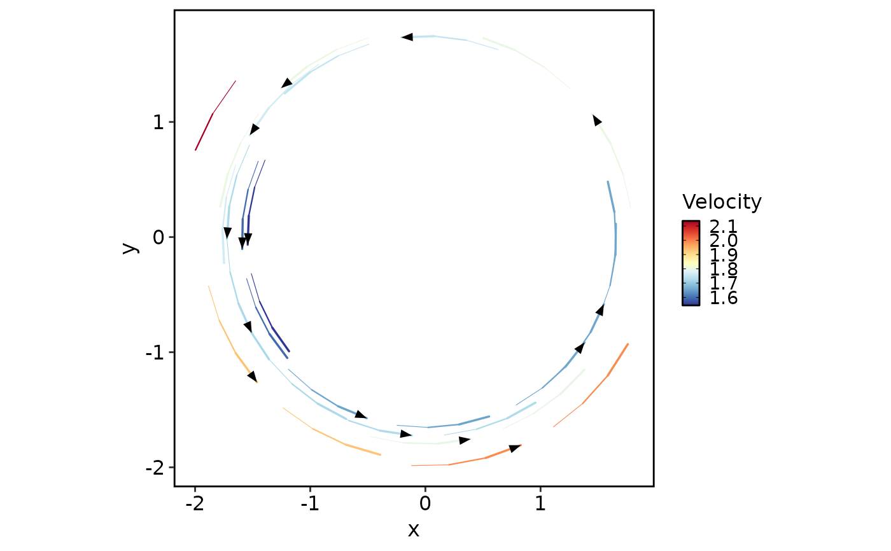

Draw streamlines and arrows from a regular two-dimensional vector grid.
Usage
streamline_layers(
x_grid,
v_grid,
L = 5,
min.L = 1,
res = 1,
n = 15,
linewidth = c(0, 0.8),
alpha = 1,
color = NULL,
palette = "RdYlBu",
palcolor = NULL,
bg.color = "white",
bg.stroke = 0.5,
arrow.color = "black",
arrow.angle = 20,
legend.title = "Velocity"
)Arguments
- x_grid
A numeric matrix with two rows containing the x and y grid coordinates, as returned by
compute_velocity_on_grid()withadjust_for_stream = TRUE.- v_grid
A numeric array with dimensions
c(2, m, m), wheremis the number of columns inx_grid. Its first dimension identifies the x and y vector components. Missing grid values are replaced with zero for drawing.- L
Numeric streamline length. Default
5.- min.L
Numeric minimum streamline length. Default
1.- res
Numeric streamline resolution. Default
1.- n
Numeric streamline density. Default
15.- linewidth
Numeric foreground line widths. Fixed colours use the maximum value; magnitude colours map streamline steps to the supplied range. Default
c(0, 0.8).- alpha
Numeric transparency of the background and foreground lines. Default
1. Arrow-only layers retain their own opacity.- color
A fixed foreground colour, or
NULLto colour by vector magnitude.- palette, palcolor
Palette name and optional colours used when
colorisNULL. Defaults are"RdYlBu"andNULL.- bg.color
Background line colour. Default
"white".- bg.stroke
Numeric extra width around the foreground lines. Default
0.5.- arrow.color
Arrow colour. Default
"black".- arrow.angle
Numeric arrow angle in degrees. Default
20.- legend.title
Colour legend title. Default
"Velocity".
Value
A list of three ggplot2 layers, followed by colour and linewidth scales
when color is NULL. Add the list to a ggplot with +.
Examples
coordinates <- seq(-2, 2, length.out = 16)
x_grid <- rbind(coordinates, coordinates)
v_grid <- array(0, dim = c(2, 16, 16))
v_grid[1, , ] <- outer(-coordinates, rep(1, 16))
v_grid[2, , ] <- outer(rep(1, 16), coordinates)
ggplot2::ggplot() +
streamline_layers(x_grid, v_grid, L = 2, n = 8) +
ggplot2::coord_equal() +
theme_this()
